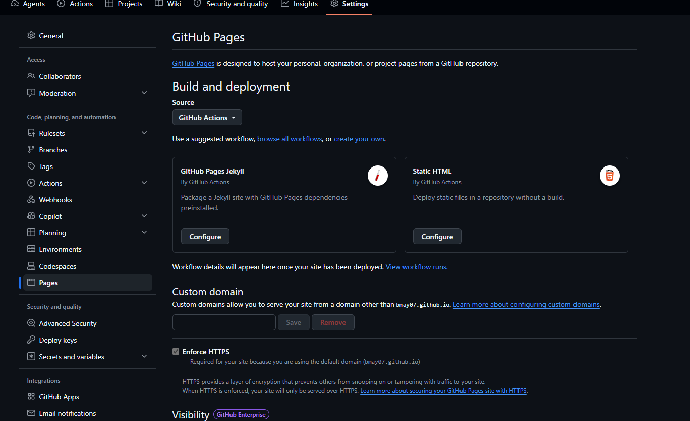

Land Clearing & Mulching
Drum Mulchers, Disc Mulchers and heavy-duty slashers for forestry mulching and heavy vegetation clearing.
Land Clearing Equipment
DRUM MULCHER
90+ HP high-flow skid steers only
Virnig V70 Drum Mulcher
Fine material processing with a controlled finished result.
For work where the vegetation needs to be thoroughly processed rather than simply severed - including stumps ground below grade.
 DISC MULCHER
90+ HP high-flow skid steers only
DISC MULCHER
90+ HP high-flow skid steers only
Virnig V70 Tree Disc Mulcher
High-production cutting for demanding clearing work.
For work where standing timber and dense vegetation need to come down efficiently and a fine residual mulch is not the objective.
Drum or Disc Mulcher?
Both cut to 356 mm and both need a high-flow skid steer. The difference is how much of the available power goes into processing the material once it has been severed.

| V70 Drum - DRM60 / DRM72 | V70 Disc - TDM60 | |
|---|---|---|
| {{ r.label }} | {{ r.drum }} | {{ r.disc }} |
Specifications from the Virnig spec sheets carried on each DTE product page. Neither attachment is universally better - the right one depends on the material, the required finish and the carrier.
See the Difference
The residual material tells the story faster than a spec table. Same site, same stand, three frames.
{{ p.cap }}
Shoot all three from the same height and distance on the same site - comparable framing is what makes the comparison credible.
See the Equipment Working
{{ videoBrief }}
Sequence: vegetation before cutting · machine entering the work · attachment under load · forward progress · material processing · finished result.
Proven in the Field
{{ storyPhotoBrief }}
Virnig V70 Drum Mulcher
Mulching where material processing and the finished result matter. 90+ hp high-flow skid steers only.
An 18" balanced Quadco® drum progressively cuts and processes standing vegetation, felled material and woody debris. Compared with the disc, the drum performs more material processing and produces a finer residual mulch.
That matters where the condition of the finished site is part of the job, or where material has to be processed rather than simply severed. Rolled forward on the skid shoes the drum mulches 51 mm below grade, so stumps can be taken down in the same pass.
Fixed and variable speed bent-axis piston motors are available; the variable motor carries more torque for stump grinding. Every unit is factory tuned to the loader for correct drum RPM - no motor adjustment or service tech required on arrival.

Virnig V70 Tree Disc Mulcher
High-production cutting for demanding vegetation. 90+ hp high-flow skid steers only.
A 60" fully-machined, balanced Quadco® disc stores rotational energy and uses it to sever standing trees and vegetation aggressively. Rated to 356 mm cutting, and 152–203 mm where the material is being mulched rather than just cut.
Compared with the drum it performs less material processing, which frees the attachment to prioritise cutting and clearing productivity. It suits jobs where dense vegetation has to be removed efficiently and a fine residual mulch is not the primary objective.
Both mulchers travel over the material they have processed, so operating height and ground clearance are part of the specification conversation, not an afterthought.
Can Your Skid Steer Run It?
Flow alone doesn't decide it. Both V70 mulchers want 114–190 L/min and a loader rated above 1,270 kg, and the attachment itself weighs 1,229–1,365 kg - which puts engine power, machine weight, stability and cooling in the conversation as much as hydraulics.
Send us the machine, we'll confirm it
Make, model and hydraulic flow if you know it. We check it against the attachment specification and tell you straight whether it will run properly - before you commit to anything.
Request a quote Call 07 5315 8020Not Every Job Needs a Forestry Mulcher
Where the work is predominantly grass, scrub, regrowth and lighter woody vegetation, a heavy-duty rotary brush cutter is the simpler, more productive tool - it doesn't spend power processing material that didn't need processing.
What Are You Cutting?
General guidance only - the appropriate attachment depends on the actual material, site conditions, required finish and carrier. Not sure? Send us photos and we'll recommend the appropriate attachment.
Help me chooseGenuine Virnig Manufacturing
Virnig builds its mulchers and cutters in the USA specifically for high-flow skid steers, matching motor, drum and disc engineering to the hydraulics rather than adapting a generic attachment. That is what keeps the V70 family running at rated RPM under load instead of stalling in heavy material.
Both the Drum and Tree Disc Mulcher share the same high-flow platform, so the choice comes down to finish and speed rather than which one is better built.
View Virnig Mulcher Range
Equipment in the Field
Tell Us What You're Cutting
Send us the material and the machine and we'll come back with the attachment and configuration that suits both.
Or call 07 5315 8020Prototype form - submissions are held in the browser and are not yet sent anywhere. Call 07 5315 8020 for a real reply today.
A product specialist will come back to you with a recommendation. If it's urgent, call 07 5315 8020.
Get the Attachment and Carrier Combination Right
{{ w.d }}
We size attachments against carriers every week. If the machine you run won't do the job properly, we'd rather tell you before you buy.
Land Clearing & Forestry Mulching - Technical Detail
{{ b.h }}
{{ b.p1 }}
{{ b.p2 }}
Land Clearing Equipment FAQs
{{ f.a }}
Assets to collect before this page goes live
Hide this block with the Show asset checklist tweak before publishing.

What Are You Cutting?
Send us your carrier details and photos of the vegetation. We'll help match the attachment to the job.